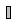

This package contains components to construct 3-dim. fonts with "cylinder" elements for the animation window. This is just a temporary hack until 3-dim. fonts are supported in Modelica tools. The components are used to construct the "x", "y", "z" labels of coordinates systems in the animation.
| Name | Description |
|---|---|
| Visualizing a set of lines as cylinders (e.g., used to display characters) | |
| Visualizing a set of lines as cylinders with variable size, e.g., used to display characters (no Frame connector) |
 Modelica.Mechanics.MultiBody.Visualizers.Internal.FixedLines
Modelica.Mechanics.MultiBody.Visualizers.Internal.FixedLines
With model FixedLines a set of lines is defined
that are located relatively to frame_a. Every line
is represented by a cylinder. This allows to define simple shaped
3-dimensional characters. An example is shown in the
following figure:

The two letters "x" and "y" are constructed with 4 lines
by providing the following data for parameter lines
lines = {[0, 0; 1, 1],[0, 1; 1, 0],[1.5, -0.5; 2.5, 1],[1.5, 1; 2, 0.25]}
Via parameter vectors n_x and n_y a two-dimensional coordinate system is defined. The points defined with parameter lines are with respect to this coordinate system. For example "[0, 0; 1, 1]" defines a line that starts at {0,0} and ends at {1,1}. The diameter and color of all line cylinders are identical.
| Type | Name | Default | Description |
|---|---|---|---|
| Boolean | animation | true | = true, if animation shall be enabled |
| if animation = true | |||
| Real | scale | 1 | The 'lines' are visualized 'scale' times bigger |
| Position | lines[:, 2, 2] | {[0, 0; 1, 1],[0, 1; 1, 0]} | List of start and end points of cylinders resolved along n_x and n_y [m] |
| Distance | diameter | 0.05 | Diameter of the cylinders defined by lines [m] |
| Position | r_lines[3] | {0,0,0} | Position vector from origin of frame_a to the origin of the 'lines' frame, resolved in frame_a [m] |
| Real | n_x[3] | {1,0,0} | Vector in direction of x-axis of 'lines' frame, resolved in frame_a. |
| Real | n_y[3] | {0,1,0} | Vector in direction of y-axis of 'lines' frame, resolved in frame_a. |
| Color | color | {0,128,255} | Color of cylinders |
| SpecularCoefficient | specularCoefficient | world.defaultSpecularCoeffic... | Reflection of ambient light (= 0: light is completely absorbed) |
| Type | Name | Description |
|---|---|---|
| Frame_a | frame_a | Coordinate system in which visualization data is resolved |
model FixedLines
"Visualizing a set of lines as cylinders (e.g., used to display characters)"
import SI = Modelica.SIunits;
import Modelica.Mechanics.MultiBody;
import Modelica.Mechanics.MultiBody.Types;
extends Modelica.Mechanics.MultiBody.Interfaces.PartialVisualizer;
parameter Boolean animation=true "= true, if animation shall be enabled";
input Real scale(min=0) = 1 "The 'lines' are visualized 'scale' times bigger";
input SI.Position lines[:,2,2]={[0,0; 1,1],[0,1; 1,0]}
"List of start and end points of cylinders resolved along n_x and n_y";
input SI.Distance diameter(min=0) = 0.05
"Diameter of the cylinders defined by lines";
input SI.Position r_lines[3]={0,0,0}
"Position vector from origin of frame_a to the origin of the 'lines' frame, resolved in frame_a";
input Real n_x[3]={1,0,0}
"Vector in direction of x-axis of 'lines' frame, resolved in frame_a.";
input Real n_y[3]={0,1,0}
"Vector in direction of y-axis of 'lines' frame, resolved in frame_a.";
input MultiBody.Types.Color color={0,128,255} " Color of cylinders";
input Types.SpecularCoefficient specularCoefficient = world.defaultSpecularCoefficient
"Reflection of ambient light (= 0: light is completely absorbed)";
protected
Lines x_label(
lines=scale*lines,
diameter=scale*diameter,
color=color,
specularCoefficient = specularCoefficient,
r_lines=r_lines,
n_x=n_x,
n_y=n_y,
r=frame_a.r_0,
R=frame_a.R) if world.enableAnimation and animation;
equation
frame_a.f = zeros(3);
frame_a.t = zeros(3);
end FixedLines;
 Modelica.Mechanics.MultiBody.Visualizers.Internal.Lines
Modelica.Mechanics.MultiBody.Visualizers.Internal.Lines
With model Lines a set of dynamic lines is defined
that are located relatively to frame_a. Every line
is represented by a cylinder. This allows, e.g., to define simple shaped
3-dimensional characters. Note, if the lines are fixed relatively to frame_a,
it is more convenient to use model Visualizers.FixedLines.
An example for dynamic lines is shown in the following figure:
The two letters "x" and "y" are constructed with 4 lines
by providing the following data for input variable lines
lines = {[0, 0; 1, 1],[0, 1; 1, 0],[1.5, -0.5; 2.5, 1],[1.5, 1; 2, 0.25]}
Via vectors n_x and n_y a two-dimensional coordinate system is defined. The points defined with variable lines are with respect to this coordinate system. For example "[0, 0; 1, 1]" defines a line that starts at {0,0} and ends at {1,1}. The diameter and color of all line cylinders are identical and are defined by parameters.
| Type | Name | Default | Description |
|---|---|---|---|
| Orientation | R | Frames.nullRotation() | Orientation object to rotate the world frame into the object frame |
| Position | r[3] | {0,0,0} | Position vector from origin of world frame to origin of object frame, resolved in world frame [m] |
| Position | r_lines[3] | {0,0,0} | Position vector from origin of object frame to the origin of 'lines' frame, resolved in object frame [m] |
| Real | n_x[3] | {1,0,0} | Vector in direction of x-axis of 'lines' frame, resolved in object frame |
| Real | n_y[3] | {0,1,0} | Vector in direction of y-axis of 'lines' frame, resolved in object frame |
| Position | lines[:, 2, 2] | zeros(0, 2, 2) | List of start and end points of cylinders resolved in an x-y frame defined by n_x, n_y, e.g., {[0,0;1,1], [0,1;1,0], [2,0; 3,1]} [m] |
| Length | diameter | 0.05 | Diameter of the cylinders defined by lines [m] |
| Color | color | {0,128,255} | Color of cylinders |
| SpecularCoefficient | specularCoefficient | 0.7 | Reflection of ambient light (= 0: light is completely absorbed) |
model Lines
"Visualizing a set of lines as cylinders with variable size, e.g., used to display characters (no Frame connector)"
import SI = Modelica.SIunits;
import Modelica.Mechanics.MultiBody;
import Modelica.Mechanics.MultiBody.Types;
import Modelica.Mechanics.MultiBody.Frames;
import T = Modelica.Mechanics.MultiBody.Frames.TransformationMatrices;
input Modelica.Mechanics.MultiBody.Frames.Orientation R=Frames.nullRotation()
"Orientation object to rotate the world frame into the object frame";
input SI.Position r[3]={0,0,0}
"Position vector from origin of world frame to origin of object frame, resolved in world frame";
input SI.Position r_lines[3]={0,0,0}
"Position vector from origin of object frame to the origin of 'lines' frame, resolved in object frame";
input Real n_x[3]={1,0,0}
"Vector in direction of x-axis of 'lines' frame, resolved in object frame";
input Real n_y[3]={0,1,0}
"Vector in direction of y-axis of 'lines' frame, resolved in object frame";
input SI.Position lines[:, 2, 2]=zeros(0, 2, 2)
"List of start and end points of cylinders resolved in an x-y frame defined by n_x, n_y, e.g., {[0,0;1,1], [0,1;1,0], [2,0; 3,1]}";
input SI.Length diameter(min=0) = 0.05
"Diameter of the cylinders defined by lines";
input Modelica.Mechanics.MultiBody.Types.Color color={0,128,255}
"Color of cylinders";
input Types.SpecularCoefficient specularCoefficient = 0.7
"Reflection of ambient light (= 0: light is completely absorbed)";
protected
parameter Integer n=size(lines, 1) "Number of cylinders";
T.Orientation R_rel=T.from_nxy(n_x, n_y);
T.Orientation R_lines=T.absoluteRotation(R.T, R_rel);
Real r_abs[3]=r + T.resolve1(R.T, r_lines);
Modelica.Mechanics.MultiBody.Visualizers.Advanced.Shape cylinders[n](
each shapeType="cylinder",
lengthDirection={T.resolve1(R_rel, vector([lines[i, 2, :] - lines[i, 1,
:]; 0])) for i in 1:n},
length={MultiBody.Frames.length(lines[i, 2, :] - lines[i, 1, :]) for i in
1:n},
r={r_abs + T.resolve1(R_lines, vector([lines[i, 1, :]; 0])) for i in 1:
n},
each width=diameter,
each height=diameter,
each widthDirection={0,1,0},
each color=color,
each R=R,
each specularCoefficient=specularCoefficient);
end Lines;